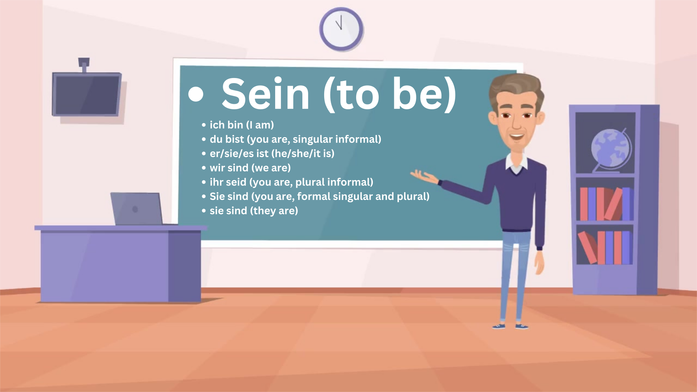
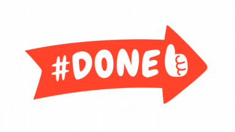

I think the first important thing is to be able to introduce yourself.
So how can you say (I am)? Actually it is very simple!
I am in German is= Ich bin.
So if you want to say, I am Alex; It is as simple as= Ich bin Alex
But what should you say if you want to introduce someone else?
Well, don't be afraid. I will show you the pronoun and it's related verb in a simple table below.
English
Deutsch
I am
Ich bin
you are
du bist*
he is
er ist
she is
sie ist
it is
es ist
we are
wir sind
you are
ihr seid*
you are
Sie sind*
they are
sie sind*
*Du bist (you are) is an informal singular form to address someone.
*Ihr seid, is the plural form of du, which is informal.
*In Deutsch/German, Sie (formal form) means You, (Which is a polite and formal form. it is both singular and plural) when written in Capital letter.
*sie, If written in lowercase means (they).
More in depth
I will show in various videos how to use the pronouns in simple steps with easy structured sentences.

Overview of the verb (to be) and it's conjugation.
ich bin (I am)
du bist (you are, singular informal)
er/sie/es ist (he/she/it is)
wir sind (we are)
ihr seid (you are, plural informal)
Sie sind (you are, formal singular and plural)
sie sind (they are)
Examples with sentences.
Play each individual part as many times as you want.
Ich bin Alex.= I am Alex.
Du bist mein bester Freund.= You are my best Friend.
Er ist Lehrer von Beruf.= He is a teacher.
Sie ist sehr intelligent.= She is very intelligent.
Es ist kalt heute.= It is cold today.
Wir sind glucklick.= We are happy.
Ihr seid spat.= You are late.
Sie sind sehr hoflich.= You are very polite.
Sie sind Geschwister.= They are siblings.
This is it! I hope you liked todays session. There is a plenty of other Lectures and lessons. Join us in the second one.
If you are looking for more meterials, visit the Deutsche Welle learning page.